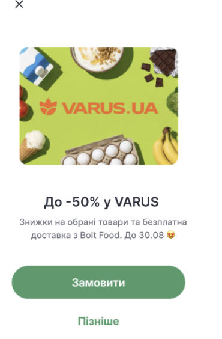
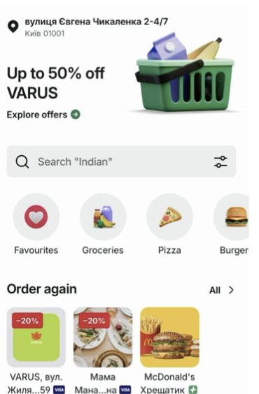
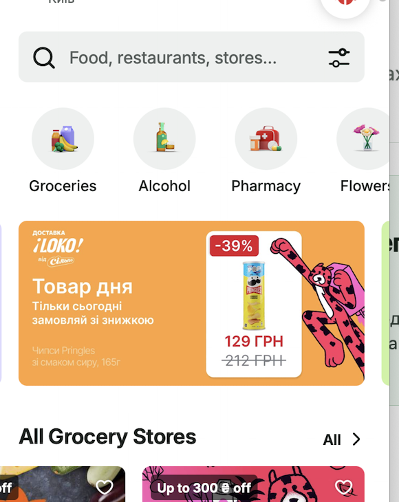
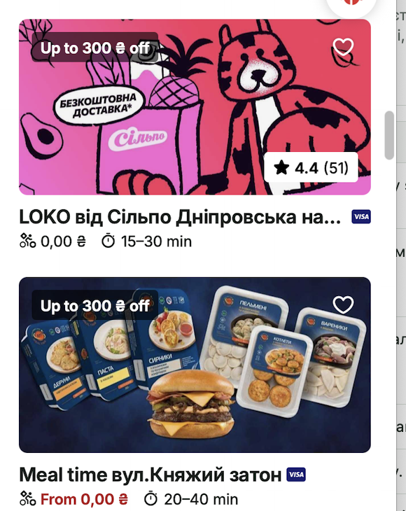
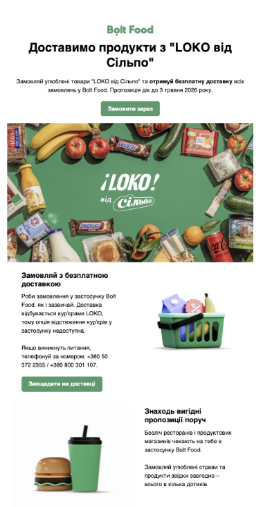
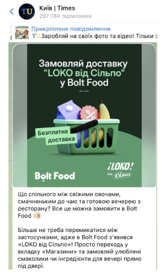

12-місячний план для 100 локацій: керований попит на кур’єрах Bolt, прозора умова зниження комісії Dark Kitchen та захист прибутковості категорії.
Напрямок співпраці
Запускаємо кулінарію як окрему delivery-категорію, а не як звичайну grocery-полицю.
Bolt бере на себе керування попитом, видимість категорії та розподіл замовлень на кур’єрів Bolt у launch-період. Сільпо забезпечує сильний асортимент, операційну готовність і цінову конкурентність.
Наша спільна ціль — виростити стабільну категорію ready meals із повторним попитом, не створюючи штучний обсяг ціною довгострокової прибутковості.
Сценарій 1 · план товарообігу та вимоги до категорії
100 локацій · 12 місяців
Базовий товарообіг
€407.5k
₴20.4m · єдиний плановий GMV
Кулінарія
€382.6k
₴19.1m · core ready meals
План замовлень
30,610
4 точки в січні → 100 із лютого
Алко + напої
€24.9k
₴1.25m · з вересня у base forecast
Місяць
Локації
OSPD
Orders
Кулінарія
Алко
Напої
Товарообіг
Товарообіг, грн
Січ
4
0.25
31
€0.4k
—
—
€0.4k
₴0.02m
Лют
100
0.32
896
€11.2k
—
—
€11.2k
₴0.56m
Бер
100
0.52
1,612
€20.2k
—
—
€20.2k
₴1.01m
Кві
100
0.64
1,920
€24.0k
—
—
€24.0k
₴1.20m
Тра
100
0.76
2,356
€29.5k
—
—
€29.5k
₴1.48m
Чер
100
0.88
2,640
€33.0k
—
—
€33.0k
₴1.65m
Лип
100
1.00
3,100
€38.8k
—
—
€38.8k
₴1.94m
Сер
100
1.10
3,410
€42.6k
—
—
€42.6k
₴2.13m
Вер
100
1.15
3,450
€43.1k
€3.4k
€2.5k
€49.0k
₴2.45m
Жов
100
1.20
3,720
€46.5k
€3.6k
€2.7k
€52.8k
₴2.64m
Лис
100
1.20
3,600
€45.0k
€3.5k
€2.6k
€51.1k
₴2.56m
Гру
100
1.25
3,875
€48.4k
€3.8k
€2.8k
€55.0k
₴2.75m
Разом
—
—
30,610
€382.6k
€14.3k
€10.6k
€407.5k
₴20.4m
Сценарій обсягу · 100 локацій
Зрілий OSPD
Orders / рік
Forecast GMV
Роль у домовленості
Консервативний
1.00
26,379
€349.7k / ₴17.5m
нижній сценарій для контролю launch-інвестицій
Базовий
1.25
30,610
€407.5k / ₴20.4m
погоджений plan; база для 3-місячного порогу
Оптимістичний
2.00
43,303
€581.1k / ₴29.1m
потенціал сильного бренду Сільпо за активного launch
Forecast побудований на даних Сільпо та фактичних продажах кулінарії retail-партнерів у Bolt Food. Базовий сценарій консервативний; optimistic враховує силу бренду Сільпо та його статус lovemark для українських споживачів. Розрахунок у грн — planning FX €1 = ₴50.
Що потрібно для категорії: асортимент, ціна і якість виконання
у forecast додано з вересня; за операційної готовності може стартувати раніше;
у разі раннього запуску перераховуємо GMV та add-on forecast;
legal / age-check вимоги — обов’язкові.
Water & soft drinks
20 SKU у forecast із вересня
вода, cola, соки, холодний чай, mixer;
можливий ранній старт за готовності асортименту — GMV forecast буде перераховано;
стартовий план: 30% attach, €2.42 на attached order.
Сценарій · комерційна пропозиція
Bolt couriers: 12% на stores + умовне зниження комісії Dark Kitchen
12% на stores — мінімальна робоча ставка, а не цільова. Вона має покрити витрати Bolt на кур’єрську доставку та операційне виконання, водночас Bolt вкладає €55.2k у новий launch package і зберігає чинне co-funding промо DK/resto. Тому зниження DK до 20% — умовне: воно активується лише після підтвердженого товарообігу stores у перші 3 місяці.
М1–3 · launch & validation
Stores: 12%
Dark Kitchen зберігає поточну ставку 25%. Bolt спрямовує launch-попит на кур’єрів Bolt.
Контрольна точка
2,540 delivered orders
та €33k товарного GMV stores за М1–3 — поріг із погодженого базового rollout-плану.
М4–12 · якщо досягнуто
DK: 25% → 20%
Знижена ставка застосовується на Dark Kitchen до завершення 12-місячного періоду.
Якщо не досягнуто
DK повертається до 25%
Зниження не активується / припиняється; сторони переглядають supply, ціни й plan before scale.
Економія Сільпо · DK
~€34.0k / ₴1.70m
З М4 до М12 знижуємо комісію на 5 в.п. (25% → 20%) для €679k / ₴34.0m DK товарообігу — це 5% від товарообігу, на який діє зниження, або 20% економії від попередньої комісії.
Економія · весь рік за 20%
€45.3k / ₴2.26m
Повний 12-місячний еквівалент: 5% × €905.3k DK товарообігу. У цій пропозиції зниження починається лише з М4, тому погоджений saving — €34.0k.
Як працює умова
Спочатку результат
Перші 3 місяці DK працює за 25%. Якщо stores досягають 2,540 delivered orders і €33k GMV, з М4 знижуємо DK до 20%. Якщо поріг не досягнуто — ставка 25% залишається; новий forecast та recovery plan погоджуємо окремо.
Рекомендація для захисту прибутковості. Для категорії кулінарії stores допускаємо markup до 10% до ціни полиці Сільпо. Це захищає комісійну економіку без суттєвого погіршення conversion; для alcohol та soft drinks ціну погоджуємо окремо за category economics.
Цінність для Сільпо
Інвестиції Bolt, savings Сільпо та маркетинг launch
Bolt Plus · 6 місяців · 2 вертикалі
€20.0k / ₴1.0m
Stores €5.4k + DK/resto €14.6k: безкоштовна доставка для Plus-клієнтів. Це клієнти з вищим середнім чеком і частішими замовленнями. Ціль pilot: +10–15% GMV uplift у Plus-exposed cohort; uplift не включено у base forecast.
Free delivery campaign · 6 із 12 міс.
€14.0k
Нові витрати Bolt для stores. У DK/resto co-funding промо зберігається без змін: demand incentives уже є в чинній моделі, без додаткового перерахунку на launch.
Public launch + inventory
€21.2k
€10.0k cash public launch + €11.2k in-kind (banner, push/email, hero, modal). Візуали та точний media-plan надаємо після погодження launch.
Інструмент
Для чого
Інвестиція / savings
Умова
Bolt Plus
6 місяців безкоштовної доставки для Plus-клієнтів у stores та DK/resto; підвищує чек, частоту та повторні замовлення.
Bolt: €20.0k Stores €5.4k + DK/resto €14.6k
6 із 12 місяців
Free delivery · stores
Знімає delivery barrier у launch, стимулює перше замовлення та repeat у категорії.
Bolt: €14.0k
6 із 12 місяців DK/resto co-funding без змін
Co-funding promo · DK/resto
Поточна підтримка попиту для ресторанної вертикалі лишається без змін; вона не замінюється запуском stores.
Bolt: €99.1k чинний annual run-rate
Existing programme не входить у нові launch costs
Public launch
Видимість нового формату, paid activation і формування першого cohort клієнтів.
Bolt: €10.0k cash
1× під час launch
Banner
Видимість категорії у high-intent surface застосунку.
Bolt: €2.0k in-kind
1× / квартал
Push + email
Повернення на lunch / dinner mission та реактивація існуючої аудиторії.
Bolt: €6.0k in-kind
1× / квартал
Hero banner + modal
Підтримка сезонних приводів і alcohol / drinks add-on.
Bolt: €3.2k in-kind
Hero 2× / рік; modal 1× / півріччя
Sponsored Listing · DK
Додаткова видимість Dark Kitchen без зміни базового co-funding promo.
Сільпо savings: 30% × чинний SL spend
30% discount на DK Sponsored Listing
Нові інвестиції Bolt у launch
€55.2k / ₴2.76m
€44.0k cash / delivery support + €11.2k in-kind. Це 13.5% від планового stores GMV €407.5k і 4.2% від combined GMV stores + DK €1.313m.
Весь портфель підтримки Bolt
€154.3k / ₴7.72m
Новий launch package €55.2k + чинний DK/resto co-funding €99.1k. Разом це 11.8% від combined GMV; Sponsored Listing discount 30% додається окремо.
Приклади placement у Bolt Food
Як launch, free delivery та промо виглядають для клієнта

Launch modalПовноекранне повідомлення з offer і прямим CTA «Замовити».

Home heroВидимий placement на головному екрані застосунку.

In-app offerПромо-карусель у категорії stores: продукт, знижка та direct path до замовлення.

Банер у списку закладівВидимий креатив у списку grocery partners із ready meals offer.

Email launchCRM-розсилка: пояснення offer, безкоштовної доставки і CTA.

Social launchПідтримка запуску через зовнішні канали та контент партнерів.
Приклади демонструють доступні формати Bolt Food на кейсах LOKO та VARUS. Креативи, тексти, аудиторії та календар для Сільпо погоджуються окремо перед launch.
Чому Bolt couriers
Попит, контроль delivery experience і масштабування на одній платформі
Керуємо попитом у launch.
Bolt може фокусувати маркетинговий інвентар, Plus і free delivery саме на новій категорії, а не очікувати органічний попит.
Контролюємо виконання замовлення.
Маршрут Bolt дозволяє керувати courier allocation, ETA та якістю delivery experience — критично для гарячих і ready-to-eat страв.
Supply уже достатній для тесту.
План не вимагає масштабування мережі до перевірки попиту: 100 локацій, 80 SKU на старті та чіткі пороги перед розширенням.